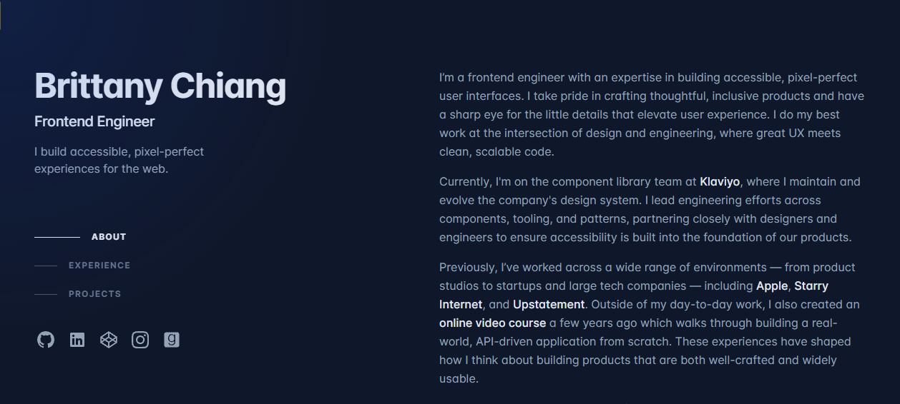
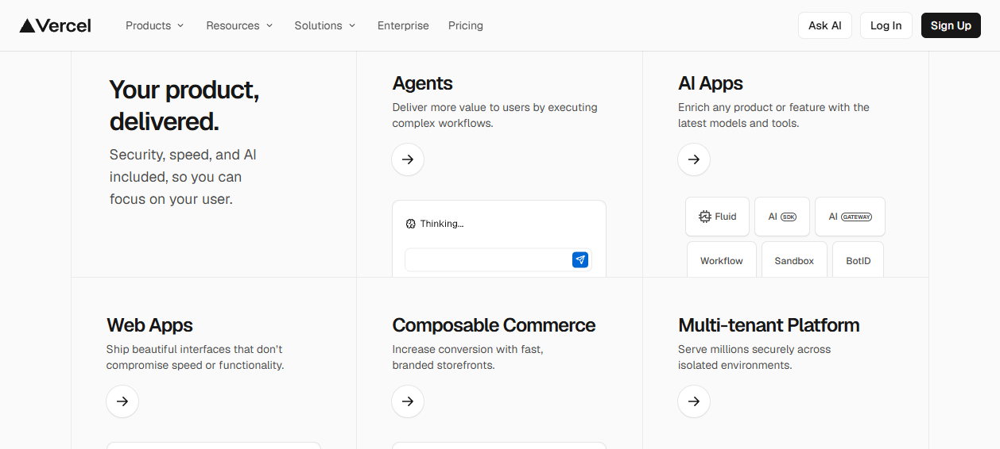

Craft Atlas · 13
Meta-Frameworks
Next.js App Router and Nuxt 4 solve the same problem from opposite syntax: ship HTML fast, hydrate the minimum, optimise images and fonts at the framework layer, and pick a render strategy per route. Of our 80 teardowns the production-grade ones cluster hard on this stack — Next.js App Router on Vercel, with next/font, RSC output, and ISR. Our own site is Nuxt 4 / Vue, so every pattern here is shown side-by-side: learn the principle from the React leaders, apply it in Nuxt.
1 · The stack the leaders actually ship
Before any opinion, the evidence. We fingerprinted the stack of every teardown (script paths, _next chunks, meta generator, font class hashes). The signal is overwhelming: elite developer/SaaS sites are Next.js App Router on Vercel, with a clear convergence on next/font and RSC output.
- Vercel ↗ — Next.js with 170+
_nextstatic chunks; Geist Sans/Mono self-hosted woff2. The product itself (deploy logs, streaming code editor, live leaderboards) is the hero — "live, interactive surfaces instead of static screenshots." - Linear ↗ — App Router confirmed (chunks under
static.linear.app/web/_next/static/chunks/,main-app-*.js). No legacy__NEXT_DATA__and no generator meta — the RSC-output signature. Inter Variable + Framer Motion. - Ramp ↗ — App Router on Vercel (
?dpl=dpl_…deployment-ID params on chunks),next/font localfor the paid Lausanne face with a metric-matched fallback. Migrated off Webflow as it scaled. - Brittany Chiang ↗ — the current v5 portfolio is a Next.js App Router rebuild (the famous v4 was Gatsby); Inter via
next/fontwith the hashed__inter_*class. - Josh Comeau ↗ — App Router + React Server Components, with zero-runtime CSS (Linaria) and compile-time syntax highlighting (Shiki) chosen specifically to drop client runtime — "modern stack choices double as portfolio evidence."
- Paul Stamatiou ↗ — 20-year site rebuilt from scratch in Next.js (2024), bundled with Turbopack, modern App-router build (no legacy data blob).
- Off-Menu ↗ & Manu Arora ↗ — both App Router + Turbopack on Vercel, RSC signature, fonts via
next/font.
Counter-evidence keeps it honest: Cassidy Williams ↗ and Tania Rascia ↗ go fully static (Astro / Gatsby) for a "near-zero JS, blazing Lighthouse" story; 14islands ↗ and Family ↗ are on the older Next.js Pages Router (SSG via _buildManifest/_ssgManifest); Mercury ↗ shows no Next markers at all (custom React). A meta-framework is a default, not a law — if the site is purely static content, a static generator wins.
Default to App Router (Next) or Nuxt 4, deploy to a platform that does ISR for free. The pattern under all the leaders: server-render by default, hydrate islands, optimise fonts/images at the framework layer, and let the host (Vercel / Netlify / Cloudflare) handle the CDN cache. For a Vue/Nuxt site you get the identical capabilities — they just have different names.
2 · Server-first: RSC & Nuxt islands
The defining move of the modern App Router is the Server Component default: components render on the server, ship HTML, and send zero JS to the client unless you opt a leaf into interactivity. Josh Comeau ↗'s blog is the clean example — an RSC stack where the whole page is server-rendered and only the toys (generative art re-roller, sound widgets) are client islands. Nuxt 4's equivalent is server components (.server.vue) and the <NuxtIsland> primitive: render a component to HTML on the server and ship no component JS.
Mental model — the boundary is a one-way door. Server code (DB, secrets, heavy deps) stays on the server; mark a leaf as a client component only where you need state, effects, or event handlers.
page.tsx — fetch, DB, secrets · 0 KB JS shipped<ArticleBody/> — async, renders to HTML'use client' <LikeButton/> — state + onClick, hydrated'use client' boundary as deep in the tree as possible. Everything above it is HTML-only; only the interactive leaf ships JS. In Nuxt the inverse default applies — components are universal (SSR + hydrate) by default; use .server.vue to make a component HTML-only, or .client.vue for client-only.Next.js — App Router (RSC default)
// app/posts/[slug]/page.tsx — Server Component
// Runs on the server. No 'use client' = 0 KB JS.
import { db } from '@/lib/db';
import LikeButton from './like-button';
export default async function Page({ params }) {
const post = await db.post.find(params.slug); // secrets safe
return (
<article>
<h1>{post.title}</h1>
<div>{post.body}</div>
{/* only this leaf ships JS */}
<LikeButton id={post.id} />
</article>
);
}
// app/posts/[slug]/like-button.tsx
'use client';
import { useState } from 'react';
export default function LikeButton({ id }) {
const [n, set] = useState(0);
return <button onClick={() => set(n + 1)}>♥ {n}</button>;
}Nuxt 4 — universal default + islands
<!-- pages/posts/[slug].vue — SSR + hydrate (universal) -->
<script setup lang="ts">
const { slug } = useRoute().params
// runs on server first, payload forwarded to client
const { data: post } = await useAsyncData(
() => $fetch(`/api/posts/${slug}`)
)
</script>
<template>
<article>
<h1>{{ post.title }}</h1>
<div v-html="post.body" />
<!-- interactive leaf, hydrated -->
<LikeButton :id="post.id" />
</article>
</template>
<!-- components/Heavy.server.vue -->
<!-- renders to HTML on the server, ships NO component JS -->
<template><MarkdownRender :src="huge" /></template>Pitfall — the 'use client' contagion. Marking a high-up component 'use client' forces its whole subtree client-side, blowing up the bundle. Push the directive to the smallest leaf that needs interactivity. In Nuxt the symmetric trap is reaching for .client.vue on a content component — you lose SSR HTML and the content vanishes for crawlers and on first paint. Server-render content; client-only the truly dynamic bits.
3 · Render strategy per route (SSG / SSR / ISR)
The same app can render different routes different ways. The leaders mix them: a marketing home is static, a dashboard is dynamic, a blog index is incrementally regenerated. Family ↗ and 14islands ↗ ship pure SSG (_ssgManifest present); Stripe ↗ is "heavily SSR'd … localizes by geo (/en-jp)"; Ramp ↗ rides Vercel's ISR. Pick per route, not per app.
The configuration is a one-liner in both. Next uses route-segment exports; Nuxt uses routeRules in nuxt.config (powered by Nitro, applied at the host's CDN edge).
Next.js — route segment config
// app/blog/page.tsx
export const revalidate = 60; // ISR: regenerate ≤ every 60s
export const dynamic = 'force-static'; // or 'force-dynamic' (SSR)
// per-fetch override wins:
// fetch(url, { next: { revalidate: 3600 } }) -> ISR 1h
// fetch(url, { cache: 'no-store' }) -> dynamic (SSR)
// default in App Router: static when possible,
// dynamic the moment you touch cookies()/headers()/searchParamsNuxt 4 — routeRules (Nitro)
// nuxt.config.ts
export default defineNuxtConfig({
routeRules: {
'/': { prerender: true }, // SSG at build
'/blog/**': { isr: 60 }, // ISR: CDN cache 60s
'/news/**': { swr: 3600 }, // stale-while-revalidate
'/app/**': { ssr: true }, // dynamic SSR
'/admin/**': { ssr: false }, // client-only SPA island
},
})
// isr/swr cache on Vercel/Netlify edge; payloads cached tooISR is the highest-ROI setting for content sites. You get static-CDN speed and fresh content without a redeploy. In Next, multiple fetches with different revalidate times collapse to the lowest for the route. In Nuxt, isr persists in the CDN until the next deploy when set to true, or for N seconds when set to a number — and Nuxt 4 now caches the payload alongside the HTML so client-side navigation to an ISR page skips the API round-trip entirely.
4 · Data fetching & caching
The App Router's headline change: fetch on the server, in the component. It ships HTML fast, keeps secrets server-side, and cuts the client bundle — no getServerSideProps, no client useEffect waterfall. Nuxt's useFetch / useAsyncData do the same job, with the killer feature of payload forwarding: data fetched on the server is serialised into the payload so the client never re-fetches it.
Next.js — fetch in a Server Component
// Server Component — runs once, on the server
export default async function Products() {
// Tagged cache: one mutation invalidates many views
const res = await fetch('https://api.shop/products', {
next: { revalidate: 3600, tags: ['products'] },
});
const products = await res.json();
return <List items={products} />;
}
// On write, revalidate by tag (Server Action / route handler):
'use server';
import { revalidateTag } from 'next/cache';
export async function addProduct(data) {
await db.product.create(data);
revalidateTag('products'); // every view tagged 'products' refreshes
}Nuxt 4 — useFetch / useAsyncData
<script setup lang="ts">
// SSR-first; payload forwarded to client (no double fetch)
const { data: products, refresh } = await useFetch(
'https://api.shop/products',
{ key: 'products', getCachedData: (k, nuxt) => nuxt.payload.data[k] }
)
// $fetch for event-driven calls (no SSR caching needed):
async function addProduct(body) {
await $fetch('/api/products', { method: 'POST', body })
await refresh() // re-run the cached fetch
}
</script>
// data is a shallowRef in Nuxt 4 — cheaper reactivity for big listsPitfall — the request waterfall. Awaiting fetches in sequence (each depending on the last) serialises latency. Fire independent fetches in parallel: Promise.all([...]) in a Next Server Component, or multiple useAsyncData calls with distinct keys in Nuxt. And never fetch user-specific data with a long revalidate — you'll leak one user's cached page to another. Per-user data is cache: 'no-store' (Next) / ssr: true dynamic (Nuxt).
5 · Image & font optimisation
Two framework primitives kill the two biggest Core Web Vitals offenders for free: the image component (LCP + CLS) and the font loader (CLS + render-blocking). Every Next leader uses both.
Fonts — self-host, inline, zero layout shift
Brittany Chiang ↗ loads Inter via next/font (the hashed __inter_* class proves it self-hosts and inlines the @font-face). Ramp ↗ uses next/font local for its paid Lausanne face with a metric-matched fallback to kill layout shift — the same trick Lee Robinson ↗ and Josh Comeau ↗ use with self-hosted fallback faces. The principle: never hit a third-party font CDN on the critical path, and always ship a size-adjusted fallback so swap causes no reflow. Nuxt's @nuxt/fonts module does the identical optimisation (self-host, preload, woff2, fallback metrics) with zero config.
Next.js — next/font
// app/layout.tsx — self-hosted, inlined, CLS-safe
import { Inter } from 'next/font/google';
const inter = Inter({
subsets: ['latin'],
display: 'swap',
variable: '--font-inter', // expose as CSS var
});
export default function Root({ children }) {
return (
<html className={inter.variable}>
<body>{children}</body>
</html>
);
}
// auto size-adjusted fallback -> 0 CLS, no font CDN hitNuxt 4 — @nuxt/fonts
// nuxt.config.ts
export default defineNuxtConfig({
modules: ['@nuxt/fonts'],
fonts: {
families: [
{ name: 'Inter', provider: 'google', weights: [400, 600] },
],
// auto: self-hosts woff2, preloads, generates
// metric-matched fallback -> 0 CLS, no Google CDN hit
},
})
/* then just use it in CSS — no <link> needed: */
/* body { font-family: 'Inter', sans-serif; } */Images — modern formats, sized, lazy
next/image and <NuxtImg> auto-serve AVIF/WebP, set explicit width/height (reserving space → no CLS), lazy-load below the fold, and generate responsive srcset. Godly ↗ shows the manual version of the same discipline — lazy background-image from an R2 object store at a fixed render width (/images/480/<uuid>.jpg), so the initial DOM has near-zero <img> tags and zero layout shift. Let the framework do this for you.
Next.js — next/image
import Image from 'next/image';
// LCP hero: priority = preload, no lazy
<Image src="/hero.jpg" alt="" width={1600} height={900}
priority sizes="100vw" />
// Below the fold: lazy by default, AVIF/WebP auto
<Image src={thumb} alt="" width={480} height={300}
sizes="(max-width:768px) 100vw, 480px" />Nuxt 4 — <NuxtImg>
<!-- LCP hero: preload, eager -->
<NuxtImg src="/hero.jpg" alt="" width="1600" height="900"
preload loading="eager" format="avif,webp" sizes="100vw" />
<!-- Below the fold: lazy, responsive srcset -->
<NuxtImg :src="thumb" alt="" width="480" height="300"
loading="lazy" format="avif,webp"
sizes="100vw md:480px" />Two lines of framework config buy you a green Lighthouse. next/font + next/image (or @nuxt/fonts + <NuxtImg>) eliminate the two CLS killers and the largest LCP cost without you writing a single byte of optimisation logic. Set priority/preload on the one LCP image, give every image explicit dimensions, and you're done.
6 · Metadata, streaming & transitions
Three more framework features the leaders lean on: typed metadata for SEO/OG, streaming for perceived speed, and native route transitions.
Metadata & OG
App Router replaces hand-rolled <head> tags with a typed metadata export (static) or generateMetadata (async, per-page). Nuxt uses useSeoMeta / useHead. Both generate correct OG/Twitter cards and canonical tags.
Next.js — metadata API
// static
export const metadata = {
title: 'Posts', description: '…',
openGraph: { images: ['/og.png'] },
};
// or dynamic, per-route, data-driven:
export async function generateMetadata({ params }) {
const post = await getPost(params.slug);
return { title: post.title,
openGraph: { images: [post.cover] } };
}Nuxt 4 — useSeoMeta
<script setup lang="ts">
const { data: post } = await useFetch(`/api/post/${slug}`)
useSeoMeta({
title: () => post.value.title,
description: () => post.value.excerpt,
ogImage: () => post.value.cover,
twitterCard: 'summary_large_image',
})
</script>Streaming & transitions
Streaming sends the shell immediately and flushes slow parts as they resolve — wrap a slow subtree in <Suspense> (or drop a loading.tsx at a route boundary) in Next; Nuxt streams server-rendered components and supports <Suspense> + the View Transitions API. Lee Robinson ↗ wires the View Transitions API into App Router navigation so essays "morph rather than hard-cut" — an app-like feel on a static content site. Nuxt 4 ships this as a one-line config.
// Next.js — instant shell, stream the slow part
import { Suspense } from 'react';
export default function Page() {
return (
<>
<Hero /> {/* flushes immediately */}
<Suspense fallback={<Skeleton/>}>
<SlowFeed /> {/* streams in when ready */}
</Suspense>
</>
);
}
// Nuxt 4 — native page transitions (View Transitions API)
// nuxt.config.ts
export default defineNuxtConfig({
experimental: { viewTransition: true },
app: { pageTransition: { name: 'page' } },
})Stream at meaningful boundaries, not everywhere. A loading.tsx at a route boundary gives instant navigation feedback; a <Suspense> around one genuinely slow widget keeps the rest interactive. Don't wrap the whole page — you just reintroduce a single blocking spinner with extra steps.
7 · Core Web Vitals & bundle discipline
The frameworks hand you fast defaults; you still have to not break them. The three Core Web Vitals map cleanly to the levers above:
- LCP (largest paint < 2.5s) — server-render the hero (RSC / SSR),
priority/preloadthe LCP image, self-host fonts. Cassidy Williams ↗ (Astro) and Tania Rascia ↗ (system-font body, zero webfont cost) optimise LCP by shipping almost no JS at all. - CLS (layout shift < 0.1) — explicit image dimensions + metric-matched font fallback. This is exactly Ramp ↗'s and Josh Comeau ↗'s fallback-face discipline, and what Godly ↗ buys with fixed-width object-store thumbnails.
- INP (interaction < 200ms) — ship less JS so the main thread is free. The RSC default and the deep
'use client'boundary are your primary tools.
Bundle discipline is the through-line. Josh Comeau ↗ chose Linaria (zero-runtime CSS) and Shiki (compile-time highlighting) to remove client runtime. Tania Rascia ↗ uses a system body stack for "zero webfont cost, instant render." Manu Arora ↗ keeps exactly one fixed interactive element and "makes everything else static — near-zero JS." The discipline: every kilobyte of JS is a tax on INP and LCP; ship HTML, hydrate islands.
// Both frameworks: lazy-load heavy client-only widgets so they
// stay out of the initial bundle (no SSR, loaded on demand).
// Next.js
import dynamic from 'next/dynamic';
const Map = dynamic(() => import('./HeavyMap'), { ssr: false });
// Nuxt 4 — built-in Lazy prefix, or defineAsyncComponent
<LazyHeavyMap v-if="show" /> <!-- code-split, loads when rendered -->Pitfall — shipping a SPA by accident. A 'use client' at the layout root, a third-party widget that drags in 200KB, or fetching everything client-side turns your "fast framework" into a slow SPA with worse SEO than a plain HTML file. Audit your client bundle (next build output / nuxi analyze). If your "static" blog post ships 300KB of JS, something is wrong — the leaders' content pages ship almost none.
8 · The portfolio-site checklist (Nuxt 4)
Our project is Nuxt 4 / Vue. Distilled from the teardowns, here is the build sheet — every item has a Next equivalent in the sections above, but these are the Nuxt levers to pull:
- Render —
routeRules:prerender: truefor the home/about,isr: Nfor the blog. Static unless a route truly needs per-request data. - Fonts —
@nuxt/fontsfor self-hosted, CLS-safe loading (the Brittany Chiang ↗ / Ramp ↗ pattern, zero-config). - Images —
<NuxtImg>everywhere, explicit dimensions,preloadon the one LCP image,loading="lazy"below the fold, AVIF/WebP. - Data —
useFetch/useAsyncDataon the server with payload forwarding;$fetchfor event-driven calls; never long-cache per-user data. - SEO —
useSeoMetaper page with a real OG image. Keep a semantic<h1>–<h3>outline (the Teenage Engineering ↗ warning: don't drop headings for visual flair). - Motion — native View Transitions (
experimental.viewTransition) for the Lee Robinson ↗ cross-fade feel;<Lazy*>any heavy animation lib so it stays out of the initial bundle. - Bundle — server-render content, client-island only the interactive leaves; run
nuxi analyzebefore shipping. Target: a content page that ships almost no JS.

next/font: server-rendered HTML, self-hosted CLS-safe font, minimal client JS. "Calm engineering" — the stack is the portfolio piece. The Nuxt 4 equivalent (universal render + @nuxt/fonts + <NuxtImg>) ships the same green Lighthouse with the same discipline.
_next chunks and self-hosted Geist. The lesson that transcends framework: make the product the hero — live, streaming, interactive surfaces (deploy logs, a real code editor, live data) instead of static screenshots. Streaming + RSC make those surfaces cheap to render and fast to paint.The whole page in one rule: server-render by default, hydrate the minimum, optimise fonts and images at the framework layer, and choose a render strategy per route. Next.js and Nuxt 4 give you identical capabilities under different names — App Router RSC ≈ Nuxt universal + islands, route-segment config ≈ routeRules, next/font ≈ @nuxt/fonts, next/image ≈ <NuxtImg>. Learn the principle once; the syntax is a lookup.